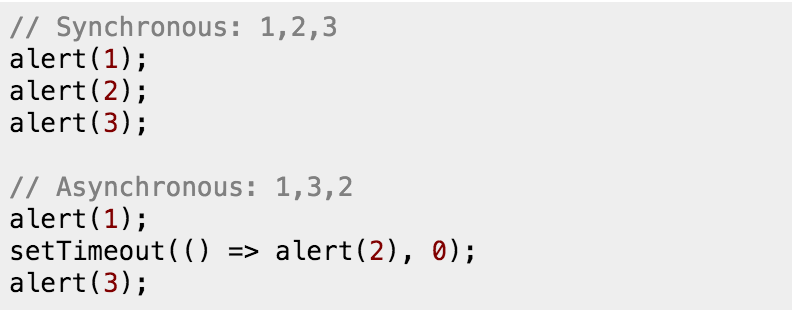
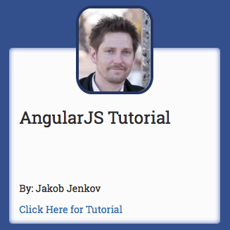
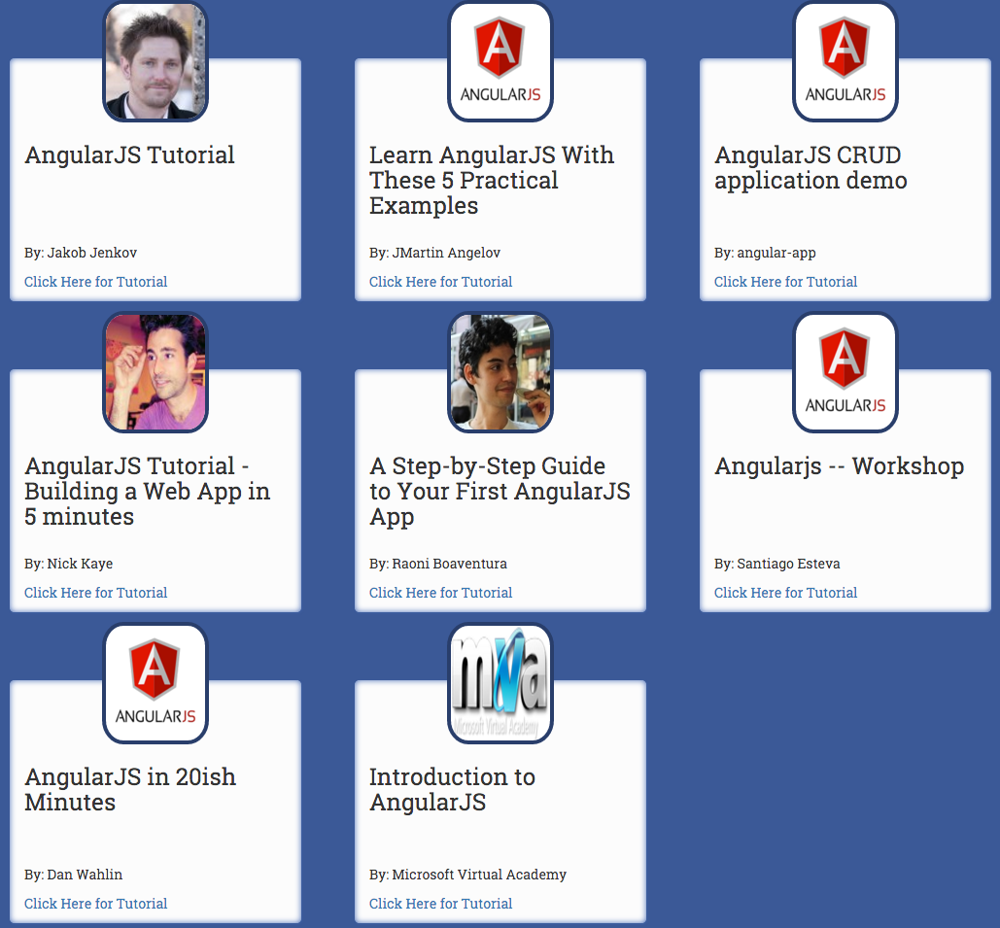
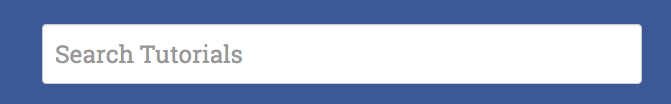

This post was created to explain to you the concepts of NodeJS and tell you what exactly NodeJS is and what it can be used for. We will answer three basic questions; What is NodeJS, What makes NodeJS different?, and What is non blocking?.
NodeJS is a server side language built on Google Chrome’s V8 JavaScript Engine. NodeJS is a cross platform is a cross-platform runtime environment that can be ran on Linux, Mac OS X, and Windows. NodeJS is a simply server-side JavaScript that can be used for many different use-cases but the large advantage to Node is that Node can scale very well. Node is scalable due to the fact that it can handle concurrency very well, meaning that if 100 request hit the server at once but the task should only take 2 seconds, then each request should be completed in two seconds. This is different from other server-side languages which would take a request, wait 2 seconds, and then do the next request.
Other than the scalability of Node, there are many other reasons that makes Node different from other programming languages. The big differences is that Node is built on JavaScript, Node is simply JavaScript for the server. This makes it a lot easier for the developer to write code because what they can write for the browser, can most likely be used on the server side and vise versa. This concept alone is what is making Node so popular, it is so much easier on the developer. But the scalability of Node and its efficiency is what makes it so much different from other languages. For example, a request is made to a web server to get data from a JSON file, other languages would be waiting for the response from the JSON file, while Node would be working on the next steps or an entirely different request while that file is fetched. This allows resources to be more efficient by working ahead or on a different request instead of idling while that single request is being processed.
The example below was taken from a stack overflow thread illustrating the difference between Blocking and Non-Blocking.

Node is a non-blocking language. It continues to work while another task is being completed in the background. As you can see in the example above, the blocking code alerts 1 then waits to alert 2 while the non-blocking code alerts 1, then starts to work on the fetch statement, but goes on to alert 3 while it is waiting for the fetch statement to be completed. Why is this important? Other languages that use the blocking concept are not using all of their resources efficiently i.e. the CPU and RAM. These resources go into idle while waiting for the task to complete. Non-blocking languages allow the program to continue and allows the CPU and Memory to work on other tasks while waiting for that fetch statement to conclude. This allows the program to better utilize the resources and becomes more efficient because there is less idle time in the program.
This tutorial was created to show you the basics of using AngularJS. This simple web application uses a corresponding JSON file for all of its data. The JSON file can be downloaded from the GitHub repository which can be found at the bottom of this tutorial. To help better explain the tutorial, we will show code snippets and images of the application. For better understanding, clone the GitHub repository located at the bottom of this tutorial. Lets get started!
Requirements
Before getting started, there are several requirements needed. These requirements are listed below and can be obtained by using Bower. To use Bower, Node Package Manager(npm) needs to be installed onto your system. To install npm, follow this tutorial.
Bootstrap
AngularJS
To install bootstrap, open up your bash terminal, navigate to your project directory and type:
bower install bootstrap
To install AngularJS, open up your bash terminal, navigate to your project directory and type:
bower install angular
After the requirements are installed into the generated bower_components, we need to create our index.html file and link bootstrap and angular.
Next we need to create an app.js file that will contain most of our AngularJS code. To do this, we need to create a function that contains a module called tutorialLists.
To let Angular know that we want to use the newly created tutorialList module, we need to add ng-app="tutorialList" inside our opening heml tag.
<htmlng-app="tutorialLists">
To test that Angular is working, lets create a header for our web application within our body tags that takes two strings, AngularJS and Tutorials, and combines them together and to print to the page.
The results of this line are shown in the image below.
Creating HTML Container
Next we need to create a container that will house the information for each tutorial. This container will display the image of the artist, the title of the tutorial in an h3 tag, the artist name, and a link to the tutorial. A description of the code will follow after the code snippet.
<divclass="col-sm-6 col-md-4 tutorialContainer"><center><imgng-src="{{tutorial.image}}"class="writerImage"></center><h3>{{tutorial.title}}</h3><divclass="positionBottom"><p>By: {{tutorial.author}}</p><p><ang-href="{{tutorial.url}}"class="tutorialLink">Click Here for Tutorial</a></p></div></div>
First, a div is created to contain all of the tutorials information. The image is then placed at the center of the div which uses ng-src="{{tutorial.image}}" to generate the image. An h3 tag is then used to get the tutorial’s title using {{tutorial.title}}. Another div container is used to hold the authors name, and link to the tutorial that uses a custom css style to position the container in the bottom left corner of the main container. The authors name is generated by using {{tutorial.author}}. Finally the link is generated using an anchor tag that uses ng-href="{{tutorial.url}}" to get the source. After we populate the containers using Angular, they should be similar to the example below.

Populating Tutorial Containers Part 1: AngularJS
To populate the tutorial containers, we first need to open our app.js file. In the app.js file, we need to create a Angular controller named TutorialController that uses the http core Angular service that we will use to pull the JSON data.
Within our TutorialController, we need to create a variable named tutorials and set it to equal this.
vartutorials=this;
Next, we are going to create a $http.get method that will populate a list inside of our tutorials variable from the specified JSON file. This function will only populate the list if the $http.get method is successful, otherwise it will do nothing.
We now need to connect our TutorialController to our HTML by using the ng-controller directive inside our opening body tag. We will also give the controller an alias called tutorialCtrl.
<bodyng-controller="TutorialController as tutorialCtrl">
Next, we want to create a tutorial container for each tutorial in the list. To do this we will add the ng-repeat directive inside our main div of our tutorial container that creates a new container for each of the tutorials inside the jsonList.
<divclass="col-sm-6 col-md-4 tutorialContainer"ng-repeat="tutorial in tutorialCtrl.jsonList">
You should now be able to run the application in your bowser and the list of tutorials will be populated from the JSON file.

Adding Search
Finally we want to be able to search the tutorials using AngularJS. To do this, we first need to add a textbox to the webpage using the input tag. Inside that input tag, we need to add a ng-model directive and set the model name to searchTutorials.

To sync up the searchTutorials model to the list of tutorials, we need to add the filter property to the ng-repeat directive by using a pipe.
<divclass="col-sm-6 col-md-4 tutorialContainer"ng-repeat="tutorial in tutorialCtrl.jsonList | filter:searchTutorials">
Summary
This tutorial is finally complete. You now have a simple AngularJS web application that pulls data from an external JSON file and displays it to a web page. The list is also searchable using the power of AngularJS filters. To view the source code in its entirety, view the GitHub repo. For more information on AngularJS, check out the AngularJS Doc.